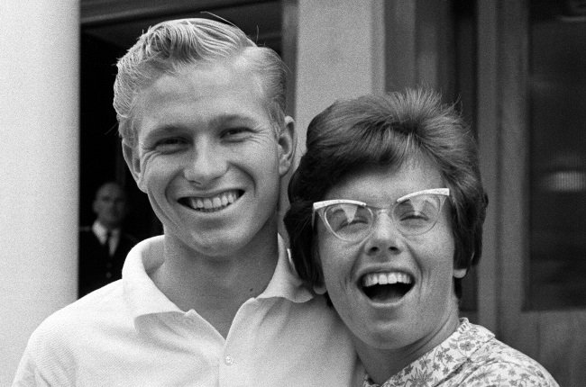
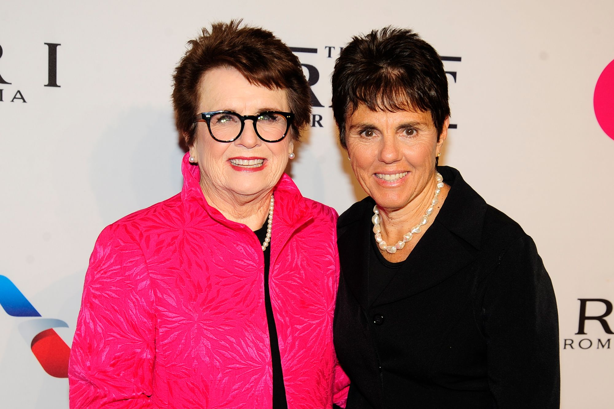

Inicio
Familia

Bill, su padre, era bombero y jugador de básquet. Betty, su madre, nadadora. Su hermano menor, Randy, jugador de baseball en la Liga (desde 1972 a 1983). Billie Jean King tiene actualmente 77 años. Quizás las nuevas generaciones no conocen la importancia de Billie en todos los sentidos. Por un lado es una de las mejores tenistas que hemos tenido. Ganadora de 39 títulos de Grand Slam, por otro es una de las principales luchadoras por los derechos de la mujer en este deporte. Billie Jean King estuvo casado anteriormente conAbogado estadounidense y corredor de bienes raíces, Larry King. Su relación fue una gran parte de la floreciente carrera de Billie Jean, ya que Larry fue la fuerza impulsora detrás de la mayoría de los logros que logró en el tenis. La historia de amor de Billie Jean con Larry King comenzó en1963 después de que se reunieron en la biblioteca de la Universidad Estatal de California, en Los Ángeles, donde ambos asistieron. Por supuesto, fue su pasión compartida por el tenis lo que los unió como Larry King, en ese momento jugado para el mejor equipo de tenis masculino de la CSU, entrenado por Scotty Deeds.En el otoño de 1964, la pareja se comprometió yEl 17 de septiembre de 1965 se casó. Billie Jean King aún no se había convertido en profesional en ese momento y con la motivación de su querido esposo por quien estaba totalmente enamorada, Billie Jean se convirtió en profesional en 1968. Fue Larry King quien presentaría ella al feminismo y empujó a romper los límites que cambiarían la forma en que las personas perciben a las mujeres en el tenis. En 1971, Larry concibió la idea de formar unGira profesional de tenis para mujeres que se llamaría World Team Tennis. Con el apoyo de Joe Cullman, CEO de Philip Morris y Gladys Heldman de World Tennis Magazine, la liga se formó en 1973.Sin embargo, la demanda por pensión no cambió cómoBillie Jean sintió hacia las mujeres como su relación con su pareja de dobles, Ilana Kloss llegaría a ser el final de su matrimonio con Larry King en 1987. A pesar de su separación, Billie Jean siguió siendo amiga de King. En 1984, se convirtió en la principal propietaria del Equipo Mundial de Tenis. Ella y su compañera Ilana Kloss ahora son padrinos de las hijas de King con su segunda esposa, Nancy King.
